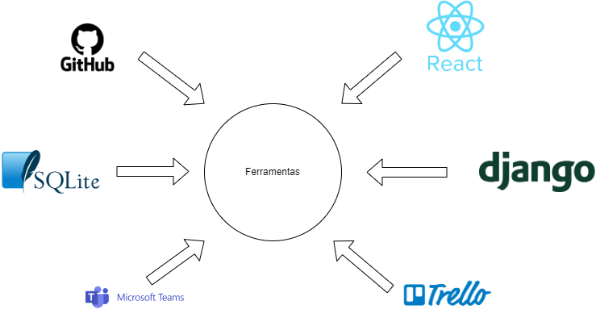
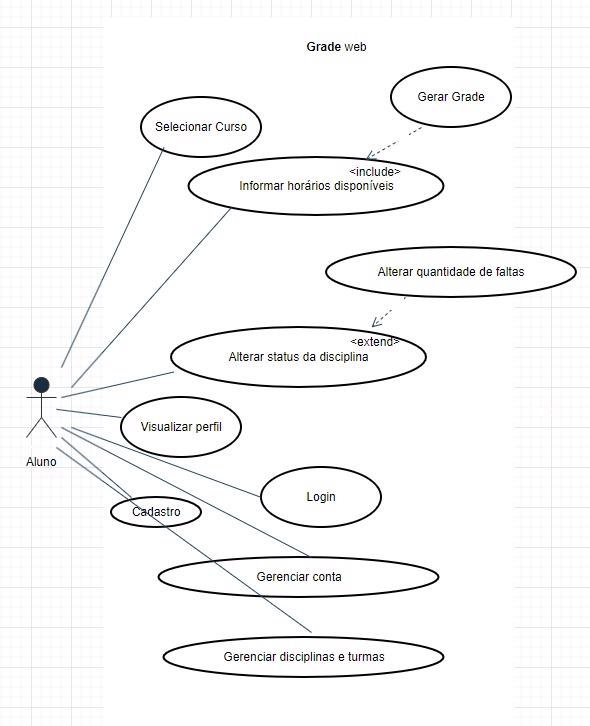

Declaração de escopo do produto
Declaração de Escopo do Produto
Versão [1.5]
Histórico de Revisão
| Data | Versão | Descrição | Autor(es) |
|---|---|---|---|
| 23/10/2023 | 1.0 | Criação do documento Declaração de escopo do produto. | Equipe Kepler |
| 10/11/2023 | 1.1 | Correção do documento Declaração de escopo do produto de acordo com recomendações do professor. | Equipe Kepler |
| 22/11/2023 | 1.2 | Correção nas sprints previstas e tecnologias usadas. | Johnny da Ponte |
| 30/11/2023 | 1.3 | Correção no diagrama de caso de uso. | Johnny da Ponte |
| 03/12/2023 | 1.4 | Correção nas tecnologias usadas. | Johnny da Ponte |
| 03/12/2023 | 1.5 | Correção no MVP. | Johnny da Ponte |
1 Problema / Sistema de software
➔ Definição da equipe:
| Papel | Responsável |
|---|---|
| Front-end | Gabriel Fenelon, Igor de Souza |
| Back-end | Gustavo Alves, Vitor Gabriel |
| Banco de dados | Johnny da ponte, Vitor Bessa |
➔ Resumo do problema: O problema central identificado é a falta de uma ferramenta de gerenciamento acadêmico que personalize e gere uma grade para os estudantes da FGA. Atualmente, os estudantes precisam lidar manualmente com o processo de matrícula em disciplinas e o acompanhamento de seu progresso acadêmico. Isso resulta em: - Ineficiência na Matrícula: Os estudantes muitas vezes têm dificuldade em encontrar disciplinas compatíveis com seus horários e suas necessidades curriculares.
- Desconhecimento do Progresso: O acompanhamento do progresso acadêmico,incluindo disciplinas concluídas e horas concluídas, é desafiador e propenso a erros.
➔ Sistema de Software. Para abordar esse problema, propomos o desenvolvimento de um Sistema de Gerenciamento Acadêmico específico para a FGA. Essa solução de software será uma plataforma completa que oferecerá as seguintes funcionalidades:
- Gerador de grade: O sistema fornecerá sugestões de disciplinas com base no curso escolhido pelo estudante, evitando conflitos de horários e garantindo uma grade mais eficiente.
- Progresso de grade: Os estudantes poderão acompanhar facilmente seu progresso acadêmico, visualizando as disciplinas concluídas
- Gerenciador de Falta: Os estudantes poderão acompanhar a frequência das faltas de forma manual.
Resumo de tecnologias usadas:

| Área | Tecnologia |
|---|---|
| Front-end | React |
| Back-end | Django |
| Banco de dados | SQLite |
| Controle de versão | Github |
| Comunicação | Microsoft Teams |
| Gestão | Trello |
➔ Motivos das tecnologias usadas:
React: Rápido, flexível e fácil de usar e aprender.
Django: Rápido, Conteúdo diverso e familiaridade da equipe.
SQLite: Fácil integração.
GitHub: Conteúdo diverso, Armazenamento e proteção de dados.
Teams: Comunicação e familiaridade da equipe
Trello: Tarefas e organizações semanais.
➔ Resumo da metodologia de desenvolvimento usada: A metodologia Ágil, com foco em Scrum e o uso da metodologia XP foram adotadas para permitir uma resposta ágil às mudanças nas necessidades acadêmicas e aos feedbacks dos estudantes e para ter uma melhora na performance da equipe ao utilizar das práticas do XP.
➔ Outras informações sobre o ciclo de vida: - Métodos, técnicas: - - Scrum Master: Um membro da equipe Scrum que atua como facilitador e ajuda a equipe a seguir as práticas do Scrum.
-
- Programação em Pares: Dois desenvolvedores trabalham juntos em uma única tarefa. Promove a revisão contínua do código, resolução de problemas e compartilhamento de conhecimento.
-
- Sprints: O desenvolvimento é dividido em iterações de curta duração, geralmente de 1 semana cada . As Sprint tem um objetivo claro e um incremento entregável e isso ajuda na gestão do projeto e adaptação às mudanças
-
- Product Backlog: Uma lista priorizada de todos os requisitos do projeto.
-
- Integração Contínua: As alterações no código são integradas continuamente ao repositório principal, permitindo a detecção precoce de conflitos e a manutenção de um código sempre funcional.
-
- Programação em Pares: Os desenvolvedores trabalham em pares, onde um escreve o código enquanto o outro revisa. Isso promove a colaboração, compartilhamento de conhecimento e melhoria da qualidade do código.
-
- Padronização do código: Ao adotar práticas de padronização de código, a equipe na XP fortalece sua coesão, favorece a eficiência colaborativa e sustenta a manutenção de um código fonte que é coeso e claro, mesmo quando produzido por diversos membros da equipe.
-
Métricas usadas no desenvolvimento:
As métricas de teste incluem: 1. Cobertura de Código: Mede a porcentagem de código testado. 1. Taxa de Falhas por Sprint: Registra o número de falhas encontradas em cada Sprint. - Testes de software:
A abordagem de testes adotada é baseada na metodologia ágil. Os níveis de teste incluem:
- Testes Unitários: Realizados pelos desenvolvedores para garantir que partes individuais do código funcionem conforme o esperado.
- Testes de Integração: Testam a integração entre diferentes módulos ou componentes.
Todas as evidências de execução de testes, métricas e resultados serão registradas e atualizadas no repositório do projeto no Github, garantindo a transparência e rastreabilidade.
2.1 Perfis
| # | Nome do perfil | Características do perfil | Permissões de acesso |
|---|---|---|---|
| 1 | Aluno | Estudante da instituição com acesso a informações acadêmicas. Pode visualizar faltas, horários de aula e informações sobre cursos e disciplinas. | - Visualizar faltas. - Acessar informações sobre cursos e disciplinas. - Verificar horários de aula. - Acessar informações pessoais. |
- Cenários
| Sistema: GradeWeb – Cenários funcionais | ||
|---|---|---|
| Numeração do cenário | Nome do cenário | Sprints |
| 1 | Cadastro de Usuários | Sprint 1 |
| 2 | Autenticação de Usuários | Sprint 2 |
| 3 | Gerenciamento de Cursos | Sprint 3 |
| 4 | Inscrição em Disciplinas | Sprint 4 |
| 5 | Visualização de Faltas | Sprint 5 |
| 6 | Acesso a Informações de Cursos | Sprint 6 |
| 7 | Configurações do Perfil do Administrador | Sprint 7 |
| 8 | Atualização de Informações Pessoais (Aluno) | Sprint 8 |
3.Backlog do produto
Sistema: GradeWeb – Backlog do produto
Numeração (Cenário / requisito) |
Sprint | Nome do requisito | Tripo de requisito (Funcional / não funcional) |
Priorização do requisito Must, Should, Could | Descrição sucinta do requisito | User histories (U.S.) associadas Identifique as U.S. associadas ao requisito |
|---|---|---|---|---|---|---|
| 1 | 1 | Cadastro de usuário | Funcional | Must | Permite o cadastro de novos usuários no sistema. | US-001, US-002 |
| 2 | 2 | Autenticação de Usuários | Funcional | Must | Permite que os usuários autentiquem-se no sistema. | US-003, US-004 |
| 3 | 3 | Gerenciamento de curso | Funcional | Must | Permite a escolha de curso. | US-005, US-006 |
| 4 | 4 | Alterar status da Disciplinas | Funcional | Must | Permite que os alunos alterem o status das disciplinas. | US-007, US-008 |
| 5 | 5 | Visualização de Faltas | Funcional | Must | Permite aos alunos visualizarem e atualizarem as faltas. |
US-009 |
| 6 | 6 | Acesso a Informações de Cursos | Funcional | Must | Permite acessar informações de cursos e disciplinas. | US-010 |
| 7 | 7 | Configurações do Perfil do Administrador | Funcional | Should | Permite ao administrador configurar perfis de usuários. |
US-011, US-012 |
| 8 | 8 | Atualização de Informações Pessoais (Aluno) | Funcional | Must | Permite aos alunos atualizarem informações pessoais. | US-013, US-014 |
4.Sprints previstas
Sistema: GradeWeb – Sprints previstas
| # Sprint | Descrição | Objetivos | Composição de itens do backlog (Lista conforme tabela Backlog do produto) |
|---|---|---|---|
| 1 | A primeira sprint visa implementar o registro de novos usuários, um passo crucial para assegurar a funcionalidade básica do sistema, possibilitando que novos estudantes se cadastrem e utilizem a plataforma. |
Implementação do procedimento de registro de novos usuários no sistema. | Cadastro de usuário |
| 2 | A segunda sprint implementa a verificação de credenciais de acesso para garantir a segurança do sistema e a autenticação confiável dos usuários. | Implementar a verificação de credenciais de acesso. | Autenticação de Usuários |
| 3 | A terceira sprint visa capacitar os estudantes a escolher o curso conforme suas preferências, promovendo a autonomia dos usuários na personalização de sua grade curricular de acordo com seu curso.. | Habilitar a seleção do curso pelos estudantes. | Gerenciamento de Curso |
| 4 | A quarta sprint visa implementar a funcionalidade que permite aos estudantes marcar as disciplinas já concluídas. Isso oferecerá aos usuários uma visão organizada de seu progresso acadêmico. | Implementar a marcação de disciplinas já realizadas. | Inscrição em Disciplinas |
| 5 | A quinta sprint concentra-se no desenvolvimento da funcionalidade que permite aos estudantes visualizar detalhes das disciplinas, com ênfase nas faltas registradas. Isso oferecerá aos usuários uma visão atualizada e clara de sua frequência acadêmica. | Desenvolver a funcionalidade de visualização de faltas nas disciplinas. | Visualização de Faltas |
| 6 | A sexta sprint visa implementar a funcionalidade que permite aos usuários acessar detalhes sobre os cursos e disciplinas oferecidos. Isso proporcionará aos estudantes uma visão completa das opções disponíveis, auxiliando na tomada de decisões sobre a grade curricular. | Permite acessar informações de cursos e disciplinas. | Acesso a Informações de Cursos |
| 7 | A sétima sprint foca no desenvolvimento de configurações exclusivas para administradores, proporcionando a eles controle avançado sobre funcionalidades e permissões do sistema. Isso amplia a capacidade dos administradores de personalizar o sistema de acordo com as necessidades específicas. | Desenvolver configurações específicas para administradores do sistema | Configurações do Perfil do Administrador |
| 8 | A oitava sprint foca na implementação da funcionalidade que permite aos alunos atualizarem suas informações pessoais de forma independente. Isso dá aos usuários a capacidade de manter seus dados atualizados de maneira autônoma. | Implementar a capacidade dos alunos atualizarem suas informações | Atualização de Informações Pessoais (Aluno) |
3 Definição de Ready /Done Definição de Ready (DoR):
Descrição Completa: A user story deve ter uma descrição clara e completa que descreve o que precisa ser feito e o motivo.
Critérios de Aceitação Claros: Todos os critérios de aceitação devem estar especificados e compreensíveis.
Priorização de Requisitos: O requisito deve estar devidamente priorizado como Must, Should ou Could.
Estimativa de Complexidade: A user story deve ter uma estimativa de complexidade, como pontos de história ou outra unidade de medida de esforço.
Dependências Identificadas: Todas as dependências devem ser identificadas, e se possível, tratadas antes do início da sprint.
Definição de Done (DoD):
Critérios de Aceitação Satisfeitos: Todos os critérios de aceitação da user story devem ser atendidos.
Testes de Aceitação Passados: Todas as funcionalidades relacionadas à user story devem passar nos testes de aceitação.
Code Review Concluído: O código relacionado à user story deve ter passado por uma revisão de código.
Documentação Atualizada: Toda a documentação relevante deve estar atualizada, incluindo documentação técnica, se aplicável.
Integração Contínua/Entrega Contínua (CI/CD): A user stories deve ser integrada ao sistema de forma contínua e pronta para entrega.
Sem Defeitos Conhecidos: Não deve haver defeitos conhecidos relacionados à user story.
Requisito 1: Cadastro de Usuário
US-001: Como um novo usuário, eu quero poder preencher um formulário com meu nome, e-mail, senha e curso para criar uma conta no sistema.
US-002: Como um novo usuário, eu quero receber uma confirmação de que minha conta foi criada com sucesso e está automaticamente logado no sistema após o cadastro.
Requisito 2: Autenticação de Usuários
US-003: Como um usuário registrado, eu quero ser capaz de inserir meu nome de usuário (e-mail) e senha na tela de login para ter acesso ao sistema.
US-004: Como um usuário registrado, eu quero receber uma mensagem de erro se inserir credenciais inválidas durante o processo de autenticação.
Requisito 3: Gerenciamento de Disciplinas
US-005: Como administrador, eu quero ter a capacidade de adicionar, editar e excluir disciplinas, para manter a lista de cursos atualizada.
US-006: Como um administrador, eu quero ser notificado sobre qualquer ação de edição ou exclusão de um curso, para garantir a precisão das informações.
Requisito 4: Inscrição em Disciplinas
US-007: Como aluno, eu quero ser capaz de visualizar uma lista de disciplinas disponíveis para matrícula com base nas informações fornecidas.
US-008: Como um aluno, eu quero receber uma confirmação de que qualquer alteração no status de uma disciplina foi bem-sucedida.
Requisito 5: Visualização de Faltas
US-009: Como aluno, eu quero ser capaz de visualizar e atualizar faltas para cada disciplina em que está com o status “Cursando”.
Requisito 6: Acesso a Informações de Cursos
US-010: Como aluno, eu quero ser capaz de acessar informações detalhadas sobre os cursos oferecidos e as disciplinas incluídas em cada curso.
Requisito 7: Configurações do Perfil do Administrador
US-011: Como um administrador, eu quero poder configurar diferentes tipos de perfis de usuários, como Administrador diferentes níveis de acesso e permissões.
US-012: Como um administrador, eu quero poder editar as configurações de perfil dos usuários, se necessário.
Requisito 8: Atualização de Informações Pessoais
US-013: Como um aluno, eu quero poder atualizar minhas informações pessoais, como endereço, número de telefone, etc.
US-014: Como um aluno, eu quero receber uma confirmação de que minhas informações pessoais foram atualizadas com sucesso.
5 Diagrama de casos de uso

O GradeWeb é uma aplicação web cujo principal objetivo é fornecer uma grade personalizada para os alunos da FGA, considerando critérios estabelecidos por cada usuário. Este software abrange funcionalidades cruciais que permitem aos estudantes realizar o seguinte:
- Cadastro e Autenticação: Os alunos podem se cadastrar e fazer login de forma segura, garantindo a proteção de suas informações pessoais.
- Gerador de Grades: O sistema inclui um gerador de grades que com base em informações fornecidas pelo aluno, como sua disponibilidade de horários e as disciplinas já concluídas, irá gerar uma grade com opções de disciplinas disponíveis para o aluno realizar a matrícula.
Este Gerenciador Acadêmico é uma ferramenta valiosa que permite aos estudantes da FGA planejar e gerenciar seus horários de forma eficiente, levando em consideração suas preferências e necessidades individuais.
BOOCH, G. et al. UML guia do usuario. [s.l.] Rio De Janeiro Elsevier Campus, 2006. SCRUM.ORG. Home. Disponível em: https://www.scrum.org/.